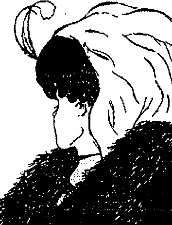
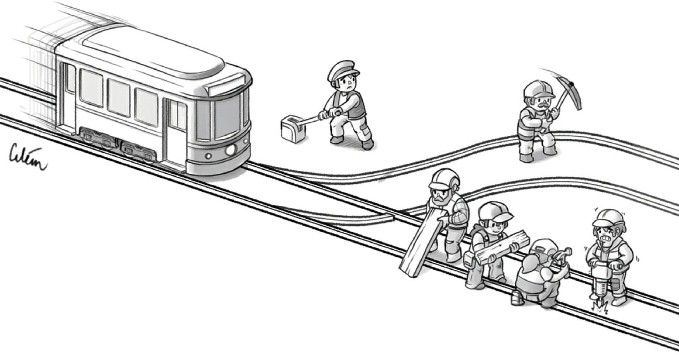
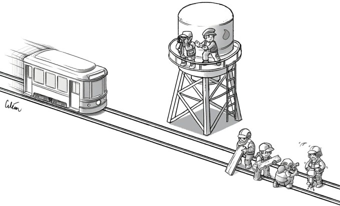
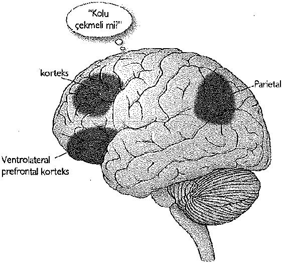
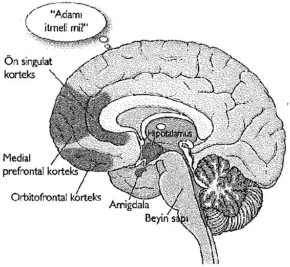
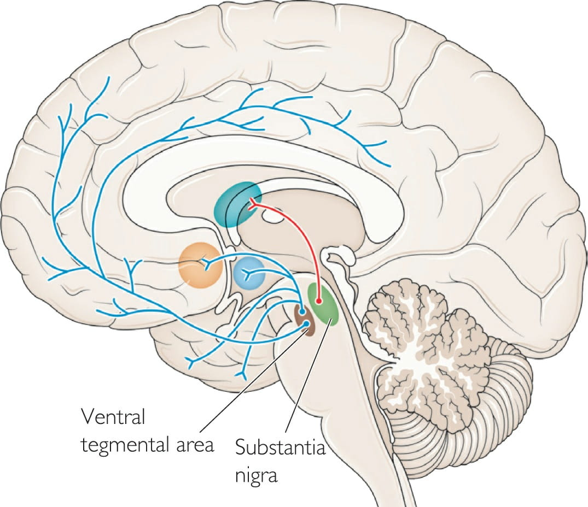
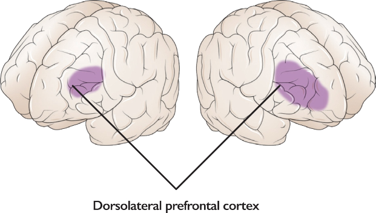

Bu dondurmayı yesem mi, yemesem mi? Bu e-postayı şimdi mi yanıtlasam, sonra mı? Hangi ayakkabıları giysem? Günlerimiz; ne yapacağımız, hangi tarafa gideceğimiz, nasıl tepki vereceğimiz, bir etkinliğe katılıp katılmayacağımız gibi konularda verdiğimiz binlerce kararın toplamından oluşur. Karar verme üzerine geliştirilen ilk kuramlar, insanları makul bir karara varmak için seçeneklerinin artı ve eksilerini tartabilen, rasyonel aktörler olarak ele almıştır. Ama insanların karar verme süreciyle ilgili bilimsel gözlemler bunu doğrulamaz. Beyin, her biri kendi hedef ve arzularına sahip ve birbiriyle rekabet halindeki birçok ağdan oluşmuştur. Dondurmayı mideye indirip indirmemeye kadar verirken, beyninizdeki ağlardan bir kısmı şeker lehine, bir kısmı da mihrap kaygısıyla aleyhine çalışacak, bazı ağlar da, yarın spor salonuna gitmeye söz vermeniz koşuluyla dondurmayı yiyebileceğiniz söyleyecektir size. Beyniniz bu anlamda, devleti yönlendirebilmek için birbiriyle kıyasıya mücadele eden rakip siyasi partilerden oluşmuş bir nöral parlamentodur. Bu nedenle kararlarınızı kimi zaman bencilce, kimi zaman da geleceği merkeze alarak verirsiniz. Karmaşık canlılar olmamızın nedeni, hepsini denetim altında tutmak istediğimiz birçok farklı güdüden oluşmamızdır.
Ameliyat masasının üzerinde, elindeki titremeleri durdurmak için beyin ameliyatı geçirmekte olan Jim adlı bir hasta yatıyor. Elektrot adı verilen uzun, ince teller beyin cerrahı tarafından Jim'in beynine yönlendirilmiş durumda. Teller üzerinden küçük bir elektrik akımı verilerek, Jim'in nöronları üzerinde titremeleri azaltacak ayarlamalar yapılabiliyor.
Bu elektrotlar, tek haldeki nöronların etkinliklerine kulak misafiri olmak için özel bir fırsat anlamına geliyor. Nöronlar, "aksiyon potansiyeli" adı verilen ani elektriksel tepecikler veya etkinlik artışları aracılığıyla konuşurlar; ancak bu sinyaller gözle görülemeyecek kadar küçük olduklarından, araştırmacılar bunları genellikle bir hoparlörden geçirirler. Böylece voltajdaki çok küçük bir değişim (saniyenin binde biri kadar süren, bir voltun onda biri ölçeğinde), işitilebilir bir "pop!" sesine dönüştürülür.
Elektrot, beynin farklı bölgelerine yönlendirildikçe, o bölgelerdeki etkinlik örüntüleri, çıkardıkları seslerle işin eğitimini almış olanlar tarafından tanınabilir. Bazı bölgeler pop!pop!pop! sesleriyle karakterize edilirken, bazıları çok daha farklı sesler üretir: pop!....poppop!...pop! Dünyanın farklı yerlerindeki insanların sohbetlerine aniden ve gelişigüzel biçimde yapılan bir kulak misafirliğine benzer bu durum. Kulak kabarttığınız insanlar çok çeşitli kültürlerden, belirli iş alanlarında çalışanlar olacağından, hepsinin sohbeti de farklı nitelikte olacaktır.
Ben de ameliyathanede, bir araştırmacı olarak bulunuyorum: Meslektaşım ameliyatı gerçekleştirirken, benim hedefim de beynin nasıl karar verdiğini daha iyi anlayabilmek. Bu amaçla Jim'den konuşmak, okumak, bakmak, karar vermek gibi farklı şeyler yapmasını istiyorum. Niyetim, nöron etkinliğiyle ilişkilendirebileceğim eylemleri bulmak. Beyinde ağrı reseptörleri bulunmadığından, hasta ameliyat sırasında uyanık tutulabiliyor. Bir yandan kayıt yaparken bir yandan da Jim' den basit bir resme bakmasını istiyorum.
Resimde gördüğünüz, başını diğer yana çevirmiş, şapkalı bir bayan olabilir. Şimdi de aynı resmi başka türlü yorumlamanın bir yolunu bulmaya çalışın. Bu sefer de aşağıya ve sola bakmakta olan bir yaşlı kadın göreceksiniz. Resme baktığınızda bunlardan ya birini ya da diğerini görürsünüz (buna algısal çift-durumluluk adı verilir): Resimdeki çizgiler, birbirinden çok farklı olan iki yorumla da tutarlıdır. Gözünüzü dikip baktığınızda önce bir tanesini, sonra diğerini, sonra yine birincisini görürsünüz ve bu böyle devam edip gider. Ama asıl önemli nokta şu ki, sayfanın kendisinde değişen bir şey yoktur. İşte bu nedenle de, Jim görünrünün değiştiğini her söylediğinde, bunun nedeni beyninde de değişen bir şeyler olmalıydı.
Jim, genç ya da yaşlı kadınlardan birini gördüğü anda, beyni bir karar vermiş durumdadır. Bir kararın bilinçli olması gerekmez. Jim örneğinde söz konusu olan, görme sistemi tarafından verilmiş algısal bir karardır; görüntüler arasındaki geçiş de tümüyle kapalı kapılar ardında saklıdır. Beyin, kuramsal olarak hem genç hem de yaşlı kadını aynı anda görebilecek olsa da, gerçekte beynin yaptığı bir iş değildir bu. Beyin bir tür refleksle, belirsizlik taşıyan bir şeyle ilgili bir seçim yapar. Sonra yeniden yapar seçimi. Bu şekilde defalarca ileri geri gidip gelebilir. Ama sonuçta yaptığı iş, belirsizliği seçeneklere parçalamaktır.
İşte bütün bunlara bağlı olarak, Jim'in beyni de genç kadın -ya da yaşlı kadın- yorumu üzerinde karar kıldığında, verilen tepkileri az sayıda nöron aracılığıyla bizler de dinleyebiliyoruz. Kimi daha yüksek bir etkinlik düzeyine çıkarken (poppop!.pop! .. pop!) kimi de yavaşlıyor (pop! .... pop! .. pop! .... pop!). Ancak değişimler, hızlanıp yavaşlamayla sınırlı değildir. Nöronlar, etkinlik örüntülerini kimi zaman da daha belli belirsiz biçimde değiştirebilir ve ilk hızlarını korudukları durumlarda bile diğerleriyle eşgüdümlü hale gelebilir ya da eşgüdümü bozabilirler.
Bizim izlemekte olduğumuz nöronlar ise, algı değişiminden tek başlarına sorumlu değiller. Milyarlarca başka nöronla ortaklaşa çalıştıklarından, tanık olabileceğimiz değişimler de, büyük beyin alanları içinde kendini gösteren örüntü değişimlerinin yansımalarından ibaret. Jim'in beyninde örüntülerden birinin diğerlerine baskın gelmesi, bir kararın verildiği anlamına geliyor.
Bütün yaşamınız boyunca her gün binlerce karar vermek durumunda olan beyniniz, bu şekilde yaşam deneyimlerinizi de belirlemektedir. Ne giyeceğiniz, kimi arayacağınız, gelişigüzel bir sözü nasıl yorumlayacağınız, bir e-postaya yanıt verip vermeyeceğiniz, bir yeri ne zaman terk edeceğinize varana kadar bütün eylem ve düşüncelerinizin temeli, aldığınız kararlardır. Kimliğiniz, yaşamınızın her anında kafatasınızın altında, beyninizin tümü içinde köpüren egemenlik savaşlarından doğar.
Jim'in beynindeki nöral etkinliği -pop!pop!pop dinleyip de hayrete düşmemek mümkün değildi. Bu, ne de olsa türümüzün bütün tarihi boyunca aldığı kararların sesini yansıtmaktaydı. Her bir evlilik teklifli, her bir savaş ilanı, hayal gücünün yaptığı her bir sıçrama, bilinmeze doğru fırlatılan her bir uzay projesi, her bir iyilik, her bir yalan, her bir dönüm noktası, her bir karar anı ... Bunların hepsi işte burada, kafatasının karanlığı içinde ve biyolojik hücre ağlarındaki bu etkinlik örüntülerinden doğmuştu.
Karar verme sürecinde sahne arkasında olup bitenlere biraz daha yakından bakalım. Farz edin ki bir dondurma dükkanının önünde duruyor ve aynı derecede sevdiğiniz iki çeşit arasında karar vermeye çalışıyorsunuz; diyelim ki naneli ve limonlu. Dışarıdan bakıldığında öyle pek de bir şey yapıyor gibi değilsiniz: Yaptığınız tek şey, orada dikilip gözlerinizle iki seçenek arasında gidip gelmek. Ama bu ölçüde basit bir seçim bile, beyninizde bir etkinlik fırtınası başlatmaya yetti de arttı bile.
Bir nöron, tek başına anlamlı bir etkiye sahip değildir. Ama her nöron binlerce başka nöron ile, onlar da yine binlercesiyle bağlantılıdır ve bu ilişki devasa, döngüsel ve dallı budaklı bir ağ içinde devam edip gider. Bu arada bütün nöronlar, birbirini uyaran ya da baskılayan kimyasallar salmaktadırlar.
Ağ içindeki belirli bir grup, naneli dondurmayı temsil etmektedir. Bu örüntü, birbirlerini karşılıklı olarak uyaran nöronlardan oluşmuştur. Nöronların mutlaka yan yana olmaları gerekmez; hatta koku, tat, görme işlevleri ve bunların yanı sıra naneli dondurmayı içeren benzersiz anılar tarihinizle ilgili, birbirine uzak beyin bölgelerini kapsamaları daha olasıdır. Bu nöronların tek başına hiç birinin, naneli dondurmayla bir ilişkisi olduğu söylenemez. Dahası, her biri farklı zamanlarda, sürekli değişim halindeki farklı ortaklıklara giderek çok çeşitli roller üstlenebilirler. Ama bu düzenlenme dahilinde hepsinin birden etkin hale gelmeleri, beyniniz için "naneli dondurma" anlamını taşır. Siz dükkanda sergilenen dondurma çeşitlerinin önünde dururken, bu nöronlar federasyonunun üyeleri de birbirleriyle heyecanlı bir iletişim içine girmişlerdir; tıpkı birbirinden uzak insanların internet üzerinden topluca yaptığı konuşmalar gibi.
Seçim kampanyası yapan tek grup, bu nöronlar değildir. Rakip olasılık -limonlu dondurma- da bu sırada kendi nöron partisiyle temsil edilmektedir. Naneli ve limonlu dondurma partilerinden her biri, kendi etkinliğini güçlendirip diğerininkini baskılayarak üstünlük sağlamaya çalışmaktadır. Tek bir galibi olan bu yarışta, mücadele taraflardan biri kazanana kadar sürer ve galip gelen taraf da bir sonraki eyleminizin ne olacağını belirler.
Beynin işleyişi, bilgisayarların aksine, her biri bir diğerine üstün gelmeye çalışan farklı olasılıklar arasındaki çatışmalardan beslenir; üstelik seçenekler de her zaman birden fazladır. Nane ya da limonlu dondurmadan birine karar verdikten sonra bile kendinizi yeni bir çatışma içinde bulmanız an meselesidir: Hepsini mi yemeli? Bir tarafınız bu lezzetli enerji kaynağını arzularken, bir tarafınız da bunun şekerli olduğunu ve onu yemek yerine koşu yapıyor olmanız gerektiğini bilmektedir. Bütün külahı mideye indirip indirmeyeceğiniz, tümüyle içerideki çatışmanın nasıl sonlanacağına bağlıdır.
Belirli koşullarda, beynin farklı kısımları arasındaki mücadeleye tanık olmak özellikle kolay hale gelir.
Bazı sara türlerinin tedavisinde hastalar, iki yarım küresi arasındaki bağlantıların ortadan kaldırıldığı "ayrık beyin" ameliyatına alınabilirler. İki yarımküre, normalde "korpus kallosum" adı verilen sinirsel otoyol aracılığıyla birbirine bağlıdır. Bu yapı, sağ ve sol yarımların birbiriyle eşgüdüm ve uyum içinde çalışmalarına olanak sağlar. Üşüdüğünüzde iki eliniz aralarında işbirliğine gider ve biri ceketinizi tutarken diğeri de fermuarı çeker.
Ama korpus kallosum'daki bağlantılar koptuğunda hem şaşırtıcı hem de büyüleyici bir klinik tablo çıkar ortaya: yabancı el sendromu. Bu sendromda iki el, birbirinden tümüyle farklı amaçlar gözetebilir. Hasta, sözgelimi bir eliyle ceketinin fermuarını yukarı çekmeye başlamışken, diğeri ("yabancı" el) birden fermuarı yakalayıp yeniden aşağı çeker. Ya da hasta bir eliyle bir bisküviye uzanırken, diğeri aniden harekete geçerek birinci ele vurup hareketi engeller. Böylece beyin içinde süregiden olağan çatışma, iki yarım kürenin birbirinden bağımsız etmesiyle açığa çıkmış olur.
Yabancı el sendromu, ameliyatı izleyen haftalar içinde yavaş yavaş kaybolur. Bu süre içinde beynin iki yarısı, geriye kalan bağlantılardan yararlanarak yeniden işbirliği içinde çalışmaya başlamışlardır. Ama bu sendrom, tek bir amaçla hareket ettiğimizi sandığımız zamanlarda bile, eylemlerimizin, aslında kafanın karanlığı içinde sürekli alevlenip sönen muazzam çarpışmaların birer ürünü olduğunu açıkça gösterir.
Beynimizin içinde süregiden çatışmalara bağlı olarak kendimizle tartışabilir, kendimize küfredebilir ya da kendimizi kandırabiliriz. İyi de, tam olarak kim, kiminle konuşuyordur bu arada? Konuşanların hepsi de sizsiniz; ama farklı parçaların söz aldığı bir siz.
Beyindeki başlıca rakip sistemleri irdeleyebilmek için, "vagon açmazı" olarak bilinen bir düşünce deneyini ele alalım. Bir tren vagonu, kontrolden çıkmış halde raylardan hızla ilerliyor. Biraz ileride dört işçi rayların onarımıyla uğraşmakta. Siz de oradasınız ve vagonun çarpmasıyla hepsinin öleceğini hemen anlıyorsunuz; ama sonra fark ediyorsunuz ki yakınlarda, vagonu bir başka raya yönlendirebilecek bir kol da var.
Ama durun bir dakika! O rayın üzerinde de bir işçi çalışıyor. Öyleyse kolu çekerseniz bir işçi ölecek; çekmezseniz de dört işçi ölecek. Kolu çeker misiniz?
Şimdi de birincisinden biraz farklı, ikinci bir senaryoyu ele alalım. Bu senaryo da aynı koşullarda başlıyor: Bir vagon, kontrolden çıkmış halde raylarda hızla ilerliyor ve ilerideki dört işçi bu durumda ölecek. Ancak bu sefer durduğunuz yer, rayları yukarıdan gören bir su deposu platformu. Yanınızda, uzaklara dalmış bakan iri yarı bir adam var. Fark ediyorsunuz ki, adamı iterseniz doğrudan rayın üzerine düşecek ve vücut ağırlığı da vagonu durdurup dört işçiyi kurtarmaya yetecek.
Adamı iter misiniz?
Bu noktada biraz durun. İki durumda da aynı denklemi düşünmeniz istenmiyor mu sizden? Bir yaşamı dört yaşam için feda etme tercihini? İkinci senaryoda 
İkinci senaryo, adamla fiziksel bir etkileşime girip onu ölüme itmenizi, bu da başka ağların göreve çağrılmasını gerektirir. Bunlar, duygularla ilgili beyin bölgeleridir.
İkinci senaryoda, farklı görüşteki iki sistem arasında bir açmaza düşmüşüzdür. Akılcı ağlarımız bize bir ölümün dört ölüme yeğlenebileceğini, duygusal ağlarımız da kendi halindeki bir adamı öldürmenin yanlış olduğunu söylemektedir. Birbirine rakip iki güdünün arasında sıkışıp kalınışızdır. Bunun sonucunda kararımız da büyük olasılıkla ilk senaryodakinin tümüyle tersine dönecektir.
Vagon açmazı, gerçek dünyada karşılaştığımız durumlara ışık tutar. Günümüz savaşlarını düşünün. Bunlar, adamı deponun tepesinden aşağı itmekten çok, kolu çekmek eylemiyle kıyaslanabilir durumdadır artık. Uzun erimli bir füze fırlatmak için bir düğmeye basıldığında, yalnızca mantık problemlerini çözmede işlev gören ağlar devreye girer. Bir insansız hava aracının çalıştırılması, video oyunu oynamaktan farksız hale gelebilir, siber saldırılar ise yıkıcı etkilerini uzun mesafelerden gösterebilirler. Bu sırada akılcı ağlar devrededir, ama aynı şey duygusal ağlar için geçerli olmayabilir. Uzaktan yürütülen savaşların ayrık ve kopuk doğası iç çelişkilerin şiddetini düşürerek savaş girişimlerini kolaylaştırır.
Bir siyaset uzmanı, nükleer füze fırlatmak için basılan düğmenin, Başkan'ın en iyi arkadaşının göğsüne yerleştirilmesi gerektiğini söylemişti. Böylece başkan nükleer bir silahı harekete geçirmek için, kendi arkadaşına fiziksel şiddet uygulamak ve onu paramparça etmek zorunda kalacaktı. Bu durumu göz önüne almak, karar sürecine duygusal ağları da katmak demekti. Ölüm-kalım kararları verilirken, başıboş bırakılmış akıl yürütme süreçleri tehlikeli olabilir. Duygularımız güçlü ve çoğu zaman da içgörülü bir seçmen kitlesi oluştururlar; onları seçimden dışlamak, yanlışlara yol açacaktır. Hepimizin robotlar gibi davrandığı bir dünya, daha iyi bir dünya değildir.
Nörobilim yeni olabilir; ama bu yöndeki sezgiler uzun bir geçmişe sahiptir. Eski Yunanlılar, yaşamlarımızı bir at arabası olarak düşünebileceğimizi ileri sürmüşlerdi. Buna göre bizler de, arabayı çeken iki atı -aklı temsil eden beyaz ada tutkuyu temsil eden siyah atı- zapt etmeye çalışan arabacılardık. Her iki at da arabayı birbirine zıt yönlerde çekmeye çalışırken bizim görevimiz ikisini de kontrol altında tutarak yolun ortasından ilerlemekti.
Duyguların önemini nörobilimin geleneksel yöntemleriyle de ortaya çıkarmak mümkündür. Bunun için, karar sürecinde duyguların dışlandığı durumlarda neler olabileceğine bir göz atabiliriz.
Duygularımızın hayatımızdaki rolü, ona zenginlik katmaktan ibaret değildir. Bir sonraki hareketimizin ne olacağını el yordamıyla belirlediğimiz günün her anında, verilen kararın arkasındaki sır, yine duygularda yatar. Bunu daha iyi görebilmek için, bir zamanlar mühendis olan ve bir motosiklet kazası geçiren Tammy Myers'ın durumuna bakalım. Kazanın sonucunda, göz çukurlarının hemen üzerinde kalan bir beyin bölgesi olan orbitofrontal korteks hasar görmüştü. Bu bölge, vücudun her tarafından akın eden sinyallerin bir araya getirilip bütünleştirilmesinde büyük önem taşır. Bunlar, vücudun durumunu (aç mı, sinirli mi, heyecanlı mı, utanç içinde mi, susuz mu, mutlu mu) beynin geri kalanına bildiren sinyallerdir.
Tammy, beyni travmaya bağlı hasar görmüş birine hiç de benzemiyor. Ama onunla beş dakika zaman geçirmeniz, yaşama dair günlük kararlarla başa çıkmada sıkıntı yaşadığını anlamanız için yeterli. Verilecek bir kararın bütün olumlu ve olumsuz yönlerini açıklayabilse de, karar gerektiren en basit durumlarda bile kararsızlık içinde boğuluyor. Hiç bir seçenek, somut olarak bir diğerinden farklı değildir; karar verilmediği sürece herhangi bir işi tamamlamak da çok zordur. Tammy de, bütün günü kanepenin üzerinde oturarak geçirdiğini söylüyor.
Tammy'nin beyni, bize karar vermeyle ilgi çok önemli bir şey söyler. Beynin en yukarıdan vücuda hükmettiğini düşünmek kolaydır; ama aslında beyin, vücuda sürekli bir geribildirim ilişkisi içindedir. Vücuttan gelen "fiziksel" sinyaller, neler olup bittiği ve bununla ilgili olarak yapılacaklar hakkında hızlı bir özet sağlamış olurlar. Herhangi bir seçenek üzerinde karar kılabilmek için, vücut ve beynin birbiriyle sıkı bir iletişim içinde olmaları gerekir.
Şu durumu düşünün: Yanlışlıkla size gelmiş bir paketi yan komşunuza teslim etmek istiyorsunuz, ama bahçe kapısına ulaştığınızda bir köpek size hırlayıp dişlerini göstermeye başlıyor. Kapıyı açıp eve doğru ilerler misiniz? Burada kararınızı belirleyen etken, köpek saldırılarına ilişkin istatistikler değildir; köpeğin tehditkar duruşu vücudunuzda bir dizi fizyolojik tepkiye yol açmıştır: kalp atım hızınızda artış, karnınızda bir sıkışma duygusu, kasların gerilmesi, göz bebeklerinin genişlemesi, kan hormonlarında değişimler, ter bezlerinin salgısı vs. Bu tepkilerin hepsi de otomatik ve bilinç dışıdır.
Böyle bir anda, eliniz kapı kolu üzerinde öylece kalakalmışken, değerlendirme kapsamına alabileceğiniz birçok dış ayrıntı vardır (köpeğin tasmasının rengi gibi); ama beyninizin şu anda asıl bilmeye ihtiyaç duyduğu şey, ne yapmanız gerektiğidir: Köpekle yüzleşmeyi mi göze almalı, yoksa paketi başka şekilde mi ulaştırmalısınız? Vücudunuzun içinde bulunduğu durum, koşulların bir özetini sunarak bu noktada imdada yetişir. Fizyolojik imzanız, flu bir gazete manşeti gibidir: "bundan kaçın" ya da "sorun yok" gibi. Bu imza, beyninizin bir sonraki eylem için karar vermesine yardımcı olacaktır.
Her gün, vücudumuzu bu şekilde okuruz. Fizyolojik sinyaller çoğu durumda daha belli belirsiz olduğundan, genellikle onların farkında değilizdir. Ancak bu sinyaller, vermek zorunda olduğumuz kararların yönlendirilmesinde yine de büyük önem taşırlar. Bir süpermarkette bulunduğunuz anları gözünüzün önüne getirmeye çalışın. Bu tür yerler, Tammy'nin kararsızlık içinde donakalmasına neden olan ortamlardır. Hangi elmayı almalı? Hangi ekmeği almalı? Hangi dondurmayı almalı? Alışveriş yapan biri, binlerce seçenekle karşı karşıya kalır. Bunun sonucunda hayatımızın yüzlerce saatini rafların önünde, nöral ağlarımızı seçeneklerden biri üzerinde karar kılmaya ikna etme çabası içinde geçiririz. Çoğunlukla farkında olmasak da, vücutlarımız, bu akıl almaz karmaşıklık içinde yolumuzu bulmamıza yardımcı olur.
Hazır çorbalardan biri üzerinde karar kılmaya çalıştığınızı farz edelim. Üstesinden gelmek zorunda olduğunuz fazlaca ayrıntı var karşınızda: kalori, fiyat, tuz içeriği, tat, paketleme, vs. Eğer bir robot olsaydınız, hangi ayrıntının daha önemli olduğunu bulmanın bariz bir yolu bulunmadığından, karar vermek için bütün gün rafın önünde çakılır kalırdınız. Seçeneklerden biri üzerinde karar kılabilmek için bir tür özete ihtiyacınız vardır. İşte vücudunuzdan gelen geribildirim de bu özeti sağlar size. Bütçenizi hesaba kattığınızda elleriniz terleyebilir; tavuk sulu şehriye çorbasını son içişinizi hatırlamanız ağzınızın sulanmasına, diğer çorbadaki aşırı krema içeriğini fark etmeniz de bağırsaklarınızın kasılmasına neden olabilir. Önce biri, sonra diğeriyle ilgili deneyimlerinizi simüle edersiniz. Vücudunuzun deneyimleri önce A çorbasına, sonra da B çorbasına hızla değer biçmenizi ve dengeyi birinden biri lehine bozmanızı sağlar. Sonuçta çorba kutularındaki verileri ayrıştırıp okumakla kalmaz, bu verileri "hissedersiniz" de. Bu duygusal imzalar, havlayan köpekle yüzleşme örneğinde söz konusu olanlardan daha belli belirsizdir belki, ama ikisindeki temel fikir aynıdır: Her seçim, vücudun bir imzasıyla damgalanmıştır. Bu da karar vermede size yardımcı olur.
Naneli ve limonlu dondurmalar arasında seçim yaptığınız daha önceki örnekte, ağlar arasında bir mücadele olduğundan söz etmiştik. Bu mücadelede dengeyi bozan ve ağlardan birinin diğerine üstün gelmesini sağlayan temel etken, vücudunuzdan gelen sinyallerdi. Tammy ise beyin hasarı nedeniyle, vücut sinyallerini karar verme süreciyle bütünleştirme becerisine sahip değil. Buna bağlı olarak, seçeneklerin değerler toplamını birbiriyle hızlı biçimde kıyaslama, sıralayabildiği düzinelerce ayrıntıyı öncelik değerlendirmesinden geçirme şansı da yok. Tammy'nin, yaşamının önemli bir bölümünü kanepede oturarak geçirmesinin nedeni de işte bu: Sahip olduğu seçeneklerden hiç biri, onun için duygusal bir değer taşımıyor. Ağların yürüttüğü kampanyaları birinin lehine çevirmek mümkün olmadığından, Tammy'nin beynindeki nöral parlamentonun tarafları, tartışmalarını kaçınılmaz bir çıkmaz noktasında sürdürüp duruyorlar.
Bilinçli zihin düşük bant genişliğine sahip olduğundan, kararlarınıza yön veren vücut sinyallerine genellikle tam erişiminiz yoktur ve vücudunuzda süregiden etkinlikler farkındalık yüzeyinin derinlerinde kalırlar. Ama sinyaller yine de olduğunuzu düşündüğünüz kişi üzerinde uzun erimli etkiye sahiptirler. Örnek verecek olursak, nörobilimci Read Montague, insanların siyasi görüşleriyle duygusal tepkilerinin niteliği arasında bağlantı olduğunu bulmuştur. Uyguladığı yöntemde katılımcılar beyin taramasından geçerken, kendilerine gösterilen bir dizi resme verdikleri tepkiler ölçülür. İğrenme duygusu uyandırmak üzere seçilmiş olan resimlerde dışkı, ceset ya da böceklerle kaplanmış yiyecek görüntüleri yer almaktadır. Tarama aygıtından çıkan katılımcılara, bir deneye daha katılmak isteyip istemedikleri sorulur; kabul ederlerse, on dakika süreyle siyasi ideoloji içerikli bir anketi doldururlar. Anketteki sorular silah kontrolü, kürtaj, evlilik öncesi seks gibi konuları kapsamaktadır. Montague'nun bulgularına göre, bir katılımcı görüntülerden ne kadar iğreniyorsa, muhafazakar eğilimleri de o oranda güçlüdür; iğrenme duygusu azaldıkça da liberal eğilimler güç kazanmaya başlar. Aradaki bu ilişki öylesine güçlüdür ki, bir katılımcının iğrendirici tek bir görüntüye verdiği nöral tepkiden yola çıkılarak, siyasi ideoloji test puanlarını yüzde 95 kesinlikle öngörmek mümkündür. Buna göre siyasi eğilimler, zihinsel ve bedensel unsurların kesiştiği alanda belirirler.
Her karar -vücudun farklı "durum"ları içinde depolanmış bulunan- geçmiş deneyimler kadar, o anki koşulları da ("X yerine Y'yi almaya yetecek param var mı? " "Z seçeneği de söz konusu olabilir mi?") hesaba katar. Ancak karar dosyasının bir bölümü daha vardır: geleceğe ilişkin tahminler.
Hayvanlar alemindeki her canlı, ödül peşinde koşmaya ayarlıdır. Ödül dediğimiz şey de özünde, vücudu koyduğu ideal hedeflere yaklaştıran bir araçtır. Vücudunuz su kaybetmeye başladığında ödül, sudur; enerji depolarınız tükenmeye başladığında ödül, yiyecektir. Su ve yiyecek, doğrudan biyolojik ihtiyaçlara hitap ettiklerinden, birincil ödüller olarak nitelendirilirler. Ancak insan davranışları daha çok, birincil ödülleri öngören ikincil ödüllerle yönlendirilir. Örneğin, metalden bir dikdörtgen tek başına beyninize fazla bir şey ifade etmez; ama onu bir musluk olarak anlamlandırmayı öğrenmiş olduğunuzdan, susuzluk çektiğinizde musluğun görüntüsü sizin için bir ödüldür. Biz insanları ele aldığımızda, en soyut kavramlar bile bizim için ödüllendirici olabilir; içinde bulunduğumuz toplumda bize değer verildiğini hissetmek gibi. Ayrıca, hayvanlardan farklı olarak, bu ödüller biyolojik ihtiyaçlarımızdan önce bile gelebilir. Read Montague'nun da işaret ettiği gibi "köpek balıkları açlık grevi yapmazlar" . Hayvanlar aleminin geri kalanı yalnızca temel ihtiyaçları peşinden koşarken, insanlar soyut idealler uğruna bu ihtiyaçları düzenli olarak geri plana atarlar. Bu nedenle bir dizi olasılıkla karşı karşıya kaldığımızda, ödülü nasıl tanımladığımıza bağlı olarak, değerini mümkün olduğunca artırabilmek için, iç ve dış verileri bütünleştirme yoluna gideriz.
İster temel, ister soyut özellikte olsun, bütün ödüllerle ortaya çıkan bir sorun, yapılan seçimlerin genellikle meyvelerini sonradan vermesidir. Aldığımız kararların neredeyse hepsi, daha sonraki bir zamanda ödül verecek olan seçimler içerir. İnsanlar, değerli buldukları bir diplomaya ileride sahip olabilmek için yıllarca okula gider, ileride alabilecekleri bir terfi ya da ücret artışının umuduyla hiç keyif almadan köle gibi çalışır, forma girmek hedefiyle zorlu egzersiz süreçlerini göze alabilirler.
Farklı seçenekleri birbirleriyle kıyaslamak; aslında her birine ortak bir birim (öngörülen ödül) üzerinden değer biçmek ve değeri en büyük olan seçenekte karar kılmak anlamına gelir. Şöyle bir senaryo düşünün: Biraz boş zamanım var ve bu süre içinde ne yapacağıma karar vermeye çalışıyorum. Yiyecek alışverişi yapsam iyi olacak; ama bir yandan da bir kafede oturup laboratuvarım için yapacağım ve süresi dolmak üzere olan bir destek başvurusu üzerinde çalışmam gerektiğinin farkındayım. Ayrıca oğlumla parkta biraz zaman geçirmek de istiyorum. Bu seçenekler menüsünün içinden bir karara nasıl varacağım?
Bu deneyimlerin her birini yaşayabilsem, sonra zamanı geriye sararak hepsini birbiriyle doğrudan kıyaslayıp verdikleri sonuca göre de biri üzerinde karar kılabilsem, işim çok kolay olurdu. Ama ne yazık ki zamanda yolculuk yapamıyorum.
Yoksa yapabiliyor muyum?
Zamanda yolculuk, insan beyninin bıkıp usanmadan yaptığı bir şeydir. Bir kararla karşı karşıya olan beyin, farklı sonuçların simülasyonunu kurarak tahmini bir gelecek modeli oluşturur. Zihinsel olarak kendimizi şimdiki zamandan ayırabilir ve henüz var olmayan bir dünyaya yolculuk yapabiliriz.
Zihnimde bir senaryonun simülasyonunu kurmak, atmam gereken adımlardan yalnızca birincisi. Kurgulanan senaryolar arasından birine karar verebilmek için, bu potansiyel geleceklerin her birinin bana sunacağı ödülü tahmin etmeye çalışıyorum. Evimdeki kileri yiyecekle doldurduğum senaryonun simülasyonunu yaptığımda, belirsizlikleri dışlamış olduğum düzenlilik durumu, bana bir rahatlama hissi veriyor. Çalışmalarıma maddi destek sağlamaksa farklı türden ödüller sunuyor bana: laboratuvarım için para bulmanın ötesinde, genel olarak bölüm başkanından alacağım övgü ve kariyerimle ilgili başarı duygusu. Kendimi oğlumla birlikte parkta hayal etmek de bende mutluluk uyandırıyor ve aile içi yakınlık duygusuyla ödüllendirilmiş oluyorum. Nihai karanın, bu üç geleceğin, ödül sistemlerimin tanımladığı ortak birim temelinde birbiriyle kıyaslanmasıyla belirlenecek. Bu, kolay bir seçim değil; çünkü bütün bu değerlendirmeler başka vurguları da kapsamakta: Alışveriş simülasyonuna bezginlik duygusu, destek başvuru yazısına gerilim duygusu, park simülasyonuna da işlerin yarım kalmasına bağlı bir suçluluk duygusu eşlik ediyor. Genel olarak, beynim farkındalık radarının altında bütün bu seçenekleri tek tek simüle ederek her biri üzerinde sezgisel bir değerlendirmede bulunuyor. Ve kararımı böyle veriyorum.
Peki, bu gelecekleri doğru biçimde nasıl simüle edebiliyorum? Önümdeki farklı yollardan ilerlemenin gerçekte nasıl bir deneyim olacağını nasıl öngörebiliyorum? Gerçek şu ki, öngöremiyorum; yani öngörülerimin tam anlamıyla doğru olup olmadığını anlamamın yolu yok. Yaptığım bütün simülasyonlar, yalnızca geçmiş deneyimlerime ve dünyanın işleyişiyle ilgili şimdiki modellerime dayanıyor. Hayvanlar aleminin bütün diğer üyeleri gibi ortalıkta dolaşıp neyin gelecekte ödülle sonuçlanıp neyin sonuçlanmayacağını rastlantısal olarak keşfetmeyi bekleyemeyiz. Beynin temel görevi, öngörüde bulunmaktır. Bunu da makul bir düzeyde gerçekleştirebilmek için, bütün deneyimlerimizden yararlanarak dünyayla ilgili sürekli bilgi toplama yoluna gideriz. Ben de, buna uygun olarak geçmiş deneyimlerimden yola çıkıyor ve her seçeneğe belli bir değer biçiyorum. Hepimizin yaptığı gibi, zihnimdeki Hollywood stüdyolarının sunduğu imkanlarla, kurguladığım geleceklere doğru zaman yolculuğu yapıyor ve taşıdıkları değeri anlamaya çalışıyorum. Seçimlerimi yaparken yararlandığım yöntem bu: olası gelecekleri birbirleriyle kıyaslamak. Rekabet halinde olan bu olasılıkları, gelecekteki ödülle tanımlanan ortak birime ancak böyle dönüştürebiliyorum.
Her seçenek için öngördüğüm ödül değerini, bir şeyin gelecekte ne ölçüde iyi olacağı öngörüsünü depolayan bir tür iç değerlendirme olarak ele alın. Yiyecek alışverişi bana gerekli gıdaları sağlayacağı için, ona on ödül birimi kadar değer biçelim. Araştırma destek başvurusunu kaleme almak zor; ancak bu da kariyerim için gerekli olduğundan, bunun değerini de yirmi beş ödül birimi olarak belirleyelim. Oğlumla zaman geçirmek bana büyük keyif verdiğine göre, parka gitmek de elli ödül birimi değerinde olsun.
Ancak bu noktada ilginç bir ayrıntıyla karşı karşıyayız: Dünya karmaşıktır; bu nedenle iç değerlendirmelerinizi hiçbir zaman kalıcı mürekkeple yazamazsınız.
Çevrenizde olup bitenlere biçtiğiniz değerler değişime açıktır; çünkü öngörüleriniz gerçekte olanlarla birçok durumda eşleşmez. Etkili öğrenmenin anahtarı, öngörü hatası adı verilen bu olgunun izlenmesinde yatar. Öngörü hatası, bir seçimin beklenen sonucu ile gerçekte ortaya çıkan sonuç arasındaki fark olarak tanımlanır.
Bugünün örneğine dönersek, beynim, parka gitmenin ne kadar ödüllendirici olabileceğiyle ilgili bir öngörüye sahip. Orada dostlarla karşılaşır ve tahminimden de iyi vakit geçirirsek, benzeri bir kararla yeniden karşı karşıya kaldığımda, bu seçeneğe verdiğim değer de artmış olacak. Ama salıncakların kırık olduğunu görmem ve yağmur yağması da, park seçeneğinin değerini bir sonraki sefer için düşürecek.
Bu süreç nasıl çalışır? Beyinde, görevi dünyaya ilişkin değerlendirmelerinizi sürekli güncellemek olan küçücük, eski bir sistem vardır. Bu sistem, orta beyindeki küçük hücre gruplarından oluşur ve bu hücrelerin özelliği de, dopamin adı verilen nörotransmiterin dilini konuşmalarıdır.
Beklentilerinizle gerçekliğiniz arasında bir uyuşmazlık olduğunda, orta beyindeki bu dopamin sistemi, durum için biçilen değeri yeniden değerlendirmeye yarayan bir sinyal yayınlar. Bu sinyal sistemin geri kalanına, işlerin beklenenden iyi mi (dopamin düzeyinin aniden fırlamasıyla) yoksa kötü mü (dopamin düzeyinin düşmesiyle) sonuç verdiğini bildirir. Beynin geri kalanı da bu öngörü hata sinyalinin etkisiyle beklentilerini, bir dahaki sefere gerçekliğe daha yakın olacak şekilde ayarlayabilir. Dopamin, bir hata düzeltici; değerlendirmelerinizi mümkün olduğunca güncel halde tutan kimyasal bir değer biçme uzmanıdır. Dopaminin de etkisiyle, kararlarınızı, gelecekle ilgili gözden geçirilmiş tahminler temelinde öncelik sırasına koyabilmektesinizdir.
Beyin temel olarak beklenmedik sonuçları algılamaya ayarlanmıştır. Bir hayvanın uyum sağlama ve öğrenme yeteneğinin temelinde bu duyarlık yatar. Öyleyse, deneyimle öğrenme sürecinde devreye giren beyin mimarisinin hal arılarından insanlara kadar bütün türlerde aynı olması, şaşırtıcı sayılmaz. Bu durum, ödüller aracılığıyla öğrenmeye ilişkin temel ilkelerin birçok canlı beyni tarafından çok önceleri keşfedilmiş olduğunu gösterir.
Farklı seçeneklere nasıl değer yüklendiğini gördük. Ancak, sağlıklı karar vermeye sıklıkla engel olabilen bir ayrıntı daha vardır: Hemen ulaşabileceğimiz seçeneklere, simüle etmekle kaldığımız seçeneklerden daha fazla değer atfetme eğilimindeyizdir. Gelecekle ilgili sağlıklı karar verme sürecinin takıldığı engel, şimdiki zamandır.
2008'de ABD ekonomisi keskin bir düşüşe girmişti. Sorunun özü ise, birçok ev sahibinin gereğinden fazla borçlanmış olmasıydı. Verilen kredilerin faiz oranları ilk birkaç yıl boyunca son derece düşüktü. Sorun, bu sürenin sonunda, oranların birden fırlamasıyla baş gösterdi. Ev almış olan birçok kişinin bu yüksek oranlar karşısında ödeme yapamaması sonucunda, bir milyona yakın sayıda eve haciz geldi ve kısa sürede bütün gezegenin ekonomisi artçı dalgalardan nasibini aldı.
Bu felaketin, beyindeki rakip ağlarla ilgisi ne olabilirdi? Bu şekilde verilen krediler, insanlara istedikleri evi hemen sağlıyor, ödemelerin sonradan yapılmasına olanak tanıyordu. Böyle bir fırsat, anlık memnuniyet peşinde koşan, yani bir şeyleri "hemen şimdi" isteyen nöral ağlara kusursuz biçimde hitap etmekteydi. Anlık hazzın kışkırtıcılığı vereceğimiz kararı öylesine güçlü biçimde etkiler ki, emlak sektöründe patlak veren krizi yalnızca ekonomik değil, nöral bir olgu olarak da ele almak gerekir.
Şimdi'nin çekim gücü, sadece krediyle borçlananlar için söz konusu değildi elbette. Krediyi veren kuruluşlar da, ileride ödenmeyecek krediler pazarlayarak, "şimdi" zengin oluyorlardı; verdikleri kredileri paketleyip satıyorlardı. Bunlar etik uygulamalar olmasa da, binlerce kişi için reddedilemeyecek ölçüde baştan çıkarıcı oldukları kesindi.
Yalnızca ekonomik krizler için geçerli olmayan bu şimdi-gelecek mücadelesi, yaşamımızın birçok farklı kesitinde kendini gösterir. Araba bayilerinin test sürüşü yapmanızda ısrar etmeleri, satıcıların eşyalara dokunmanızı istemeleri hep bu yüzdendir. Yaptığınız zihinsel simülasyonlar, "burada ve şimdi" gerçekleşen bir deneyimle yarışamaz.
Gelecek, beyin için olsa olsa şimdinin soluk bir gölgesi olabilir. Şimdinin gücü, insanların neden o an için kendilerini iyi hissettirip ileride tatsız sonuçlar yaratabilecek kararlar aldıklarını açıklar. Yapmamaları gerektiğini bildikleri halde içki ya ,da madde alan insanlar, yaşamlarından yıllar götürebileceğini bildikleri halde anabalik steroid kullanan sporcular, yeni bir ilişkinin cazibesine kapılan evli çiftler ...
Şimdinin kışkırtıcı cazibesine karşı koyabilmek için yapa bileceğimiz bir şey var mıdır? Evet, vardır. Beyindeki rakip sistemler sayesinde. Şöyle düşünün: Bazı şeyleri yapmanın zor geldiğini hepimiz biliriz. Spor salonuna düzenli olarak gitmek gibi. Formda olmak istesek de, iş
salona gitmeye gelince, önümüzde her zaman yapılacak daha zevkli şeyler vardır. O an yapa bileceğimiz şeyin cazibesi, geleceğe ait soyut bir zindelik kavramından daha güçlü olacaktır. Öyleyse bir çözüm önerelim: Spor salonuna gitmeyi garanti altına almak istiyorsanız, bundan 3.000 yıl önce yaşamış bir kişi, size esin kaynağı olabilir.
Bu kişi, spor salonu senaryosunun çok daha uç bir örneğini yaşamıştı. Yapmak istediği bir şey vardı; ama zamanı geldiğinde şeytana karşı koyamayacağının da farkındaydı. Mesele, onun için fiziğini korumak değil, hayatını büyüleyici güzellikteki bir grup genç kızın gazabından kurtarmaktı.
Truva Savaşı'ndan zaferle çıkmış ve yurduna geri dönmekte olan efsanevi kahraman Odysseus'tan söz ediyoruz. Odysseus, yaptığı bu uzun yolculuğun bir noktasında, gemisinin kısa süre sonra muhteşem güzellikteki Sirenlerin yaşadığı adanın önünden geçeceğini fark etmişti. Sirenler, denizcilerin aklını başından alan büyüleyici güzellikte şarkılar söylemeleriyle ün yapmışlardı. Ancak sorun şuydu ki, Sirenlerin cazibesine karşı koyamayan denizciler onlara ulaşmaya çalışırken, gemileri kayalara çarpıp parçalanırdı.
Bu efsanevi şarkıları dinlemek için Odysseus da dizginlenemez bir istek duyuyor, ancak bu arada kendisi ve tayfasının ölümüne neden olmak da istemiyordu. Bunun üzerine bir plan yaptı. Müziği duyduğunda, gemisini adanın kayalıklarına doğru sürme dürtüsüne karşı kayamayacağını biliyordu. Sorun şimdiki akılcı Odysseus değil, gelecekteki Odysseus'tu: Sirenlerin müziğini işittiği anda dönüşeceği, aklını yitirmiş bir Odysseus. Adamlarına, kendisini gemi direğine sıkıca bağlamalarını emretti. Kendileri de kulaklarını balmumuyla tıkayacak ve böylece Sirenlerin şarkılarını duymayacaklardı. Gemiyi yönlendirirken, Odysseus'un bütün yalvarmalarını, haykırışlarını ve çırpınmalarını görmezden gelmek üzere kesin emir almışlardı.
Odysseus, gelecekteki kendisinin doğru kararları verecek durumda olmayacağının farkındaydı. Aklı başındaki Odysseus, bu nedenle her şeyi öyle bir ayarladı ki, yanlış adımı atması artık mümkün olamazdı. İşte bütün bunlara bağlı olarak, şimdiki ve gelecekteki kendiniz arasında yapacağınız bu türden pazarlıklar, Odysseus anlaşması olarak anılagelmişlerdir.
Spor salonuna gitme örneğine dönersek, benim yaptığım basit Odysseus anlaşması, bir arkadaşımla orada buluşmak üzere önceden sözleşmekten ibarettir. Bu sosyal anlaşmaya bağlı kalmak yönünde hissettiğim baskı, beni o direğe bağlayan etkendir. Bir kez aramaya koyulduğunuzda, bu Odysseus anlaşmalarıyla çevrelenmiş olduğunuzu fark edersiniz. Final sınavları haftasında birbirlerine Facebook şifrelerini veren üniversite öğrencileri, örneklerden yalnızca biridir. Her biri, diğerinin şifresini değiştirir ve böylece finaller bitene kadar ikisi de Facebook'a giriş yapamazlar. Rehabilitasyon programlarına katılan alkol bağımlıları için önerilen ilk adım, evlerini alkollü içkilerden bütünüyle temizlemek ve böylece kendilerini zayıf hissettiklerinde önlerinde onları ayartacak bir şey bırakmamaktır. Kilo sorunu olan bazı insanlar da mide hacimlerini küçültme yoluna giderek, fazla yemenin önüne fiziksel bir engel koymuş olurlar. Odysseus anlaşmasının biraz farklı bir uygulamasında ise öyle bir ayarlama yapılır ki, insanlar verdikleri sözden dönmeleri durumunda karşı oldukları bir kuruluşa belirli bir para bağışında bulunurlar. Örnek vermek gerekirse, hayatı boyunca hak eşitliği için mücadele etmiş bir kadın, Ku Klux Klan için yüklüce bir çek yazmış ve arkadaşına tek bir sigara daha içerse çeki örgüte göndermesini sıkı sıkıya tembih etmişti.
Bütün bu örneklerin ortak yönü, insanların, gelecekte istenmeyen şekilde davranmamak için, şimdiki zamanda bazı ayarlamalar yapmış olmalarıdır. Çünkü kendimizi direğe sıkıca bağladığımızda, şu anın ayartıcı gücüne karşı koyma şansımız vardır. Bu, olmak istediğimiz insan tipiyle daha uyumlu bir davranış sergilememizi sağlayan küçük bir oyundur. Odysseus anlaşmasının anahtarı, farklı koşullarda farklı insanlar olduğumuzu kabul etmektir. Daha iyi kararlar vermek için, yalnızca kendinizi değil, sahip olduğunuz bütün kimlikleri tanımanız önemlidir.
Kendinizi tanımak, mücadelenin yalnızca bir kısmıdır; verdiğiniz mücadelelerin sonucunun her zaman aynı olmayacağını bilmeniz de önemlidir. Bir Odysseus anlaşmasının yokluğunda bile, spor salonuna gitmek için bazen daha fazla, bazen daha az hevesli olursunuz. Bazen iyi kararlar verirsiniz, bazen de sahip olduğunuz nöral parlamento sonradan pişman olacağınız bir kararda oy çokluğu sağlar. Peki ama neden? Çünkü sonuç, vücudunuzun bir saati diğerini tutmayan genel durumunu belirleyen birçok değişken etkene bağlıdır. Bir örnek verelim: Cezaevinde kalmakta olan iki hükümlünün, şartlı tahliye kurulunun önüne çıkması planlanmış. Hükümlülerden biri kurulun huzuruna 11.27'de çıkıyor. Suçu dolandırıcılık, ceza süresi ise otuz ay. Diğer hükümlünün kurul önüne çıktığı saat ise 13.15. Suçu ve ceza süresi, birinci hükümlüyle aynı.
İlk hükümlünün şartlı tahliyesine izin verilmezken, karar, ikinci hükümlü için olumlu. Neden? Kararda etkili olan şey ne? Irk mı? Görünüş mü? Yaş mı?
Bin yargı kararının ele alındığı 2011 tarihli bir çalışmaya göre ana etken, yukarıda sıralananlardan herhangi biri değil, daha çok açlıktı. Bir hükümlünün şartlı tahliye şansı, kurulun yemek molasının hemen sonrasına denk gelmesi durumunda en yüksek değer olan yüzde 65'e çıkıyor, ama bir oturumun sonuna doğru değerlendirilen hükümlü için, en düşük değer olan yüzde 20'ye iniyordu.
Başka türlü ifade edecek olursak, farklı ihtiyaçlar önem kazandıkça, kararlardaki öncelik sıralamaları da değişir; koşulların değişmesi, değerlendirmelerin de değişmesine neden olur. Bir hükümlünün kaderi, yargıcın, biyolojik gereksinimlerine göre işleyen nöral ağlarıyla sıkı bir ilişki içindedir.
Bazı psikologlar, bu etkiyi "benlik kaynaklarının tükenmesi" (ego-depletion) olarak tanımlarlar. Buna göre, yönetsel işlevlerle ilgili üst düzey bilişsel beyin bölgeleri (prefrontal korteks gibi) yorulabilir. İrade gücü, sınırlı bir kaynaktır ve tıpkı bir depo dolusu benzin gibi, bizi ancak sınırlı bir süre idare eder. Yargıçlarla ilgili örneğe dönersek, üzerinde karar vermek durumunda oldukları vaka sayısı arttıkça (ki, bir oturumda otuz beş vaka ele almak zorunda kalabiliyorlardı), beyinleri de enerjisini o ölçüde tüketiyordu. Bir sandviç, bir parça meyve gibi bir şeyler atıştırmak ise enerji depolarını doldurmaya yetiyor ve kararlarını yönlendirmede başka güdüler daha etkili hale gelebiliyordu.
Genelde insanların akılcı birer karar merci olduklarını; bilgiyi içselleştirip işledikten sonra makul bir yanıt ya da çözüme ulaştıklarını varsayarız. Ama işleyiş gerçekte böyle değildir. Ön yargıdan kaçınmak için uğraş veren yargıçlar bile kendi biyolojileri içine hapsolmuşlardır.
Kararlarımız, eşlerimizle ilişkilerimiz temelinde de etkiye aynı ölçüde açıktır. Tek bir eşle bağ kurup yaşamak olarak tanımlanan tek eşliliği ele alalım. Bu, kültürümüz, değer yargılarımız ve ahlaki bakış açımızın devreye girdiği bir karar gibi görünür bize. Öyledir de aslında; ama karar sürecine etkiyen daha derin bir kuvvetin varlığı da söz konusudur: hormonlarınız. Özellikle de oksitosin adı verilen bir hormon, bağ kurmanın sihrine katılan en önemli bileşendir. Yakın geçmişte yapılan bir çalışmada, eşlerine aşık olan erkeklere fazladan küçük bir oksitosin dozu verilmiş ve farklı kadınları çekicilik bakımından değerlendirmeleri istenmişti. Aldıkları fazladan oksitosin sonucunda, erkekler başka kadınları değil, yalnızca kendi eşlerini daha çekici bulmuşlar, hatta oldukça çekici bir kadın araştırmacıdan fiziksel olarak uzak durma eğilimine bile girmişlerdi. Oksitosin, sonuçta kendi eşlerine olan bağlılıklarını artırmıştı.
Vermek zorunda olduğumuzu hissettiğimiz kararlar için epeyce enerji harcarız. Doğru yoldan ayrılmamak, sıklıkla irade gücüm üze; o kurabiyeyi reddetmemizi (en azından ikinci kurabiyeyi reddetmemizi) ya da güneşte dolaşmak varken elimizdeki işi bitirmemizi sağlayan içsel güce başvurmamıza bağlıdır. İrade gücümüzün zayıfladığını hepimiz hissetmişizdir. Uzun ve yorucu bir iş gününün sonunda verdiğimiz kararlar pek de sağlıklı sayılmaz çoğunlukla. Kimi zaman yememiz gerekenden daha fazla yerken, kimi zaman da bir işi tamamlamak yerine televizyon seyrederken buluruz kendimizi.
Psikolog Roy Baumeister ve meslektaşları da, bu durumu mercek altına almak üzere kolları sıvadılar. Yaptıkları çalışmada, üzücü bir film izlettirilen gönüllülerin yarısından normalde verecekleri tepkileri vermeleri, diğer yarısından da duygularını bastırmaları istendi. Filmden sonra hepsine birer el egzersizi aleti verildi ve bunu mümkün olduğunca uzun süreyle sıkmaları istendi. Duygularını bastıran grup daha çabuk pes etmişti. Neden? Çünkü kişinin kendini kontrol etmesi için enerji gerekir; bu da yapacağımız bir sonraki iş için daha az enerjimiz kaldığı anlamına gelir. Kışkırtılmaya direnmek, zor kararlar vermek ya da inisiyatif kullanmak gibi çabaların görünüşte aynı enerji kaynağını tüketmesinin nedeni de budur. Öyleyse irade gücü yalnızca kullandığımız değil, tükettiğimiz bir şeydir de aynı zamanda.
Bizi bağ kurmaya yönlendiren oksitosin gibi kimyasallara neden sahibiz peki? Evrimsel açıdan baktığımızda, aldığı biyolojik talimatlar doğrultusunda genlerini olabildiğince geniş bir alana yayması beklenen bir erkek bireyin tek eşlilikten uzak durması, akla daha uygun değil mi? Öyle görünse de, yavruların sağkalımı açısından baktığımızda, iki ebeveyne sahip olmak, tek ebeveyne sahip olmaktan daha avantajlıdır. Bu basit gerçek öylesine önemlidir ki, beyin, kararlarınızı bu yönde etkilemek için gizli yollardan yararlanır.
Karar verme sürecinin iyi bir şekilde anlaşılması, daha iyi toplumsal politikaların geliştirilmesine olanak tanır. Sözgelimi, her birimiz dürtülerimizi denetlemek için kendimizce bir yol geliştirmişizdir. Çünkü işler aşırıya vardığında, kendimizi dürtülerimizin anlık tutkularının birer kölesi olarak bulabiliriz. Bu açıdan baktığımızda, Uyuşturucuyla Savaş gibi toplumsal girişimler hakkında daha kapsamlı bir anlayışa sahip olabiliriz.
Madde bağımlılığı suç, düşük üretkenlik, zihinsel hastalıklar, hastalık bulaştırma -ve daha yakınlarda da, giderek kabaran cezaevi nüfusu- gibi durumlara yol açan eski bir toplumsal sorundur. On hükümlüden yaklaşık yedisi madde kullanımı ya da bağımlılığı için belirlenen ölçütlere uymaktadır. Bir çalışma, hükümlülerin yüzde 35,6'sının, suç işledikleri sırada madde etkisi altında olduğunu göstermiştir. Madde istismarı, çoğunlukla da uyuşturucuya bağlı suçlar temelinde, on milyarlarca dolarlık harcamalara da neden olur.
Birçok ülke madde bağımlılığı sorunuyla baş etmek için bunu yasa dışı ilan etme yoluna gitmiştir. Bundan birkaç onyıl önce, uyuşturucuya bağlı suçlardan hapis cezası alan Amerikalıların sayısı 38.000 civarındaydı. Bugün bu sayı yarım milyondur. Bu durum, ilk bakışta Uyuşturucuyla Savaş'ta bir başarı gibi görünse de, kitlesel cezalar, aslında uyuşturucu ticaretini yavaşlatmış değildir. Çünkü parmaklıklar arkasında yatanlar kartel patronları, mafya babaları ya da üst düzey tacirler değil, üzerlerinde az miktarda, genellikle de iki gramın altında uyuşturucuyla yakalanan kullanıcılar ve bağımlılardır. Hapse tıkılmak, bu kişilerin sorununu çözmediği gibi, daha da beter hale getirir.
ABD'de uyuşturucuyla bağlantılı suçlardan hapis cezası almış kişiler, Avrupa Birliği'ndeki bütün hükümlülerin toplamından fazladır. Sorun şu ki, hapis cezası madde kullanımını yeniden tetikleyerek kişinin yeniden ceza almasına, dolayısıyla da oldukça pahalıya patlayan bir kısır döngüye neden olur. İnsanların toplumsal çevrelerinden soyutlanmaları ve yeni iş olanaklarının ortadan kalkması, bağımlılığa güç katan etkenlerdir.
ABD'de her yıl Uyuşturucuyla Savaş için harcanan para 20 milyar dolar civarındayken, küresel toplam da 100 milyar doların üzerindedir. Ancak bu yatırım işe yaramadığı gibi, mücadelenin başlangıcından bu yana madde kullanımı da artmıştır. Bunca harcama neden başarısızlıkla sonuçlanmıştır? Madde teminiyle ilgili sorun, bir taraftan bastırdığınızda diğer tarafından şişen bir su balonu gibi olmasıdır. Bu nedenle arzı engellemek yönünde bir saldırıda bulunmak yerine, talebin üzerine eğilmek daha iyi bir stratejidir. Madde talebinde bulunan merci ise, bağımlının beynidir.
Madde bağımlılığının yoksulluk ve akran baskısıyla tetiklendiğini iddia edenler vardır. Bunların etkisi yadsınamaz; ancak meselenin özü, beynin biyolojisinde yatar. Laboratuvar deneyleri, sıçanların bir kola sürekli olarak vurarak, yiyecek ve sudan olma pahasına kendilerine kimyasal madde temin edebildiklerini göstermiştir. Sıçanların bunu yapma nedeni ne para sorunu ne de toplumsal baskıdır. Neden, söz konusu kimyasalların, beyinlerindeki temel ödül devrelerini harekete geçirmesidir. Kimyasallar, bu kararın alabileceği bütün kararlardan daha iyi olduğunu beyne etkili biçimde söylemektedir. Mücadeleye, kimyasala direnme gereğinin bütün nedenlerini temsil eden başka beyin alanları da katılabilir. Ama bağımlı bir kişi için kazanan, her zaman o belirli kimyasala açlık duyan ağ olacaktır. Madde bağımlılarının büyük çoğunluğu alışkanlıklarından kurtulmak istese de bunu yapamaz ve hayatlarına dürtülerinin tutsağı olarak devam ederler.
Madde bağımlılığında sorun beyinde olduğundan, çözümün de orada olması akla uygundur. Bu yöndeki yaklaşımlardan biri, dürtü kontrolünde daha etkili bir değişim yaratmak, bunun bir yolu da cezanın kesinlik ve hızını artırmaktır. Sözgelimi, uyuşturucu suçlularının haftada iki gün uyuşturucu testine girmeleri istenip, kullanımın tespiti halinde de zaman geçirmeden ve otomatik olarak hapis cezası almaları sağlanabilir. Bu yolla, her şey yalnızca uzak soyutlamalara kalmamış olur. Paralel olarak, bazı ekonomistler de ABD' de 1990'ların başından itibaren düşen suç oranlarının, kısmen de olsa sokaklardaki polis sayısının artışına bağlarlar. Beynin diliyle ifade edecek olursak, polis görüntüsü uzun dönemli sonuçları tartan ağları harekete geçirmektedir.
Benim laboratuvarımda ise, potansiyel olarak etkili bir başka yaklaşım üzerinde çalışmaktayız. Çalışma kapsamında, beynin görüntülenmesi sırasında katılımcılara gerçek-zamanlı geribildirim sağlıyor ve kokain bağımlılarının kendi beyin etkinliklerini izleyip bunları denetlemeyi öğrenmelerini hedefliyoruz.
Sizi katılımcılardan biri olan Karen ile tanıştırayım. Karen oldukça canlı, neşeli ve zeki bir kişi; ayrıca elli yaşına rağmen gençlere özgü bir enerjiye de sahip. Yirmi yıldan uzun süredir taş kokain bağımlısı olan Karen, bu maddenin hayatını mahvettiğini, kokain eğer hemen erişebileceği bir yerdeyse, onu kullanmaktan başka seçeneği olmadığını söylüyor. Laboratuvarımda yürüttüğümüz deneyler kapsamında Karen'ı da beyin tarama (fMRI olarak da bilinen işlevsel manyetik rezonans görüntüleme) cihazına yerleştiriyor ve ona taş kokain resimleri gösterirken dürtülerini harekete geçirmesini istiyoruz. Onun için hiç de zor olmayan bu iş, beyninin "şiddetli istek ağı" olarak özetlediğimiz belirli bölgelerini etkinleştiriyor. Sonraki talimatımız, duyduğu bu şiddetli isteği baskılaması. Ona taş kokainin kendisi için nelere mal olduğunu düşünmesini istiyoruz: mali açıdan, ilişkiler açısından, iş açısından. Bu talimat, bu sefer de "baskılayıcı ağ" olarak özetlediğimiz başka beyin bölgelerini harekete geçiriyor. istek ve baskılama ağları, üstünlük için sürekli bir mücadele halinde; herhangi bir anda hangisinin galip geldiği, Karen'ın, kendisine kokain sunulduğunda atacağı adımı belirleyecek
Görüntüleme cihazında devreye giren hızlı bilgisayımsal teknikler, kazanmakta olan ağın hangisi olduğunu; şiddetli istek ağının kısa dönemi gözeten hesaplamalarının mı, yoksa dürtüleri denetleyen baskılayıcı ağın uzun dönemi gözeten hesaplamalarının mı galip geldiğini ölçmemizi sağlıyor. Karen' a, mücadeleyi izleyebilmesi için, bir hızölçer aracılığıyla gerçek-zamanlı geribildirim de sunuyoruz bir yandan. İbre, istek ağı baskınken- kırmızı alana, dürtüsünü başarıyla baskıladığında ise mavi alana kayıyor. Karen bu şekilde, ağlar arasındaki dengeyi değiştirmek için ne yapması gerektiğini keşfetmek amacıyla farklı yaklaşımlar deneyebiliyor.
Tekrar tekrar yaptığı alıştırmalarla Karen, ibreyi istediği yönde hareket ettirmenin yolunu daha iyi anlamaya başlıyor. Bunu nasıl başardığının bilincinde olabilir de, olmayabilir de; ama yinelemeli alıştırmalarla, isteğini baskılamasını sağlayan nöral ağı güçlendirmenin yolunu bulmuş durumda. Bu teknik henüz çok yeni olmakla birlikte, bir umut ışığı taşıyor: Karen kokain teklifiyle bir daha karşı karşıya kaldığında, eğer isterse, anlık dürtü ve isteğini yenebileceği bilişsel araçlara artık sahip. Bu eğitim, Karen'ı belli bir biçimde davranmaya zorlamıyor; yaptığı şey, dürtülerinin kölesi olmak yerine seçimleri üzerinde daha fazla söz sahibi olabileceği bilişsel becerileri ona sunmaktan ibaret.
Madde bağımlılığı, milyonlarca insanın karşı karşıya olduğu bir sorundur; ama bu sorunun çözüleceği yerler cezaevleri değildir. İnsan beyninin gerçekte nasıl karar aldığına ilişkin daha kapsamlı bir anlayışa sahip olmak, cezanın ötesinde yeni yaklaşımlar geliştirmemizi sağlayacaktır. Beyinde işleyen süreçleri daha iyi kavradıkça, davranışlarımızı da isteklerimizle daha uyumlu biçimde ayarlayabiliriz.
Daha genel bir çerçeveden bakarsak, karar verme süreçlerine aşina olmak, ceza hukuku sisteminin bazı yönlerinde iyileştirmeler yapılmasına, hem daha insancıl hem de daha uygun maliyetli politikaların geliştirilmesine olanak tanıyacaktır; üstelik yalnızca bağımlılık kapsamında değil, başka konularda da. Nasıl olacak derseniz: Bir kere, işe, kitlesel hapis cezasına karşılık rehabilitasyonu vurgulamakla başlamak gerekir. Bu ilk bakışta fazla hayalci bir bakış açısı gibi gelse de, aslında yaklaşımın öncülüğünü büyük başarıyla şimdiden gerçekleştirmekte olan bazı merkezlerin varlığından söz edelim. Bunlardan biri, Madison, Wisconsin'de bulunan Mendata Gençler İçin Tedavi Merkezi.
Mendata'da bulunan on iki ila on yedi yaş arası gençlerin önemli bir bölümü, normalde müebbet hapis cezasını gerektirecek suçlar işlemiş. Aynı suçlar Menclota için giriş bileti niteliğinde. 1990'ların başında, sistemin artık gözden çıkarmış olduğu gençlerle çalışmak için yeni bir yaklaşım sunmak üzere başlatılan program, özellikle de onların gelişmekte olan genç beyinlerine odaklı. 1. Bölüm' de gördüğümüz gibi, prefrontal korteksin tümüyle gelişmemiş olması, kararların çoğunlukla gelecek gözetilmeksizin ve dürtüsel olarak verilmesine neden olur. Mendota'da rehabilitasyon için benimsenen yaklaşım, işte bu gerçekten yola çıkılarak oluşturulmuştu. Program, çocuk ve gençlerin kendilerini kontrol etme becerisini geliştirmek amacıyla bir kılavuzluk, danışmanlık ve ödül sisteminden yararlanıyor. Kullanılan önemli bir teknik ise, herhangi bir karara varmadan önce biraz durup, kararın gelecekteki sonuçlarını düşünmelerini istemek. Bu, onları olasılıklar üzerinde simülasyonlar yapmaya ve böylece dürtülerin anlık tatminine baskın gelecek nöral ağları güçlendirmeye teşvik eden bir yöntem.
Dürtüleri kontrol etmede yetersizlik, cezaevinde kalan suçluların çoğu için geçerli, ayırıcı bir özelliktir. Yasalara karşı gelen insanların önemli bir bölümü, doğru ve yanlış eylemler arasındaki farkı genellikle bilir, ceza sisteminden gelecek tehdidi de üzerlerinde hissederler. Ancak zayıf dürtü denetiminin tutsağı olmuşlardır. Pahalı bir çantayla dolaşan yaşlıca bir kadın gördüklerinde, fırsattan yararlanmak dışındaki seçenekleri gözden geçirmek için duraklamazlar bile. Onlar için şimdi'nin cazibesi, gelecekle ilgili herhangi bir düşünceye baskın gelecektir.
Günümüzde geçerli ceza sistemi kişilerin istemli davranışları ve bununla ilgili suçlamalara dayansa da, Mendota, farklı seçeneklerin de göz önüne alındığı bir deney merkezi konumundadır. Toplumların, cezaya ilişkin kökleşmiş yönelimlere .sahip oldukları yadsınamaz belki; ama kararlarda devreye giren nörobilimsel etkilerle daha yakından ilişkili, farklı bir ceza hukuku sistemi de pekala geliştirilebilir. Böyle bir sistem kimseyi cezasız bırakmayacak, ancak yasalara karşı gelenlerle mücadele ederken, onları geçmişleri yüzünden silmek yerine, geleceklerini de gözetecektir. Toplumsal kuralları yıkan insanların, toplumun güvenliği adına sokaklardan alınmaları gerekir; ama cezaevinde olup bitenler yalnızca suçludan intikam almaya değil, kanıta dayalı ve anlamlı bir rehabilitasyon sürecine de dayanmalıdır.
Karar verme eylemi, her şeyin temelini oluşturur: kim olduğumuzun, ne yaptığımızın, çevremizdeki dünyayı nasıl algıladığımızın. Seçenekleri tartma becerisinden yoksun olsaydık, en ilkel dürtülerimizin tutsağı olarak yaşayabilirdik ancak. Ve ne şu anı akıllıca yönlendirebilir, ne de geleceğimizi planlayabilirdik. Tek bir kimliğe sahip olduğumuz halde tek bir zihne sahip değilizdir; birbiriyle rekabet halindeki birçok güdünün birer toplamı olarak yaşarız. Kendimiz ve toplumumuz için daha iyi kararlar vermemiz ise, seçeneklerin beyinde birbiriyle girdiği mücadeleyi anlamamıza bağlıdır.